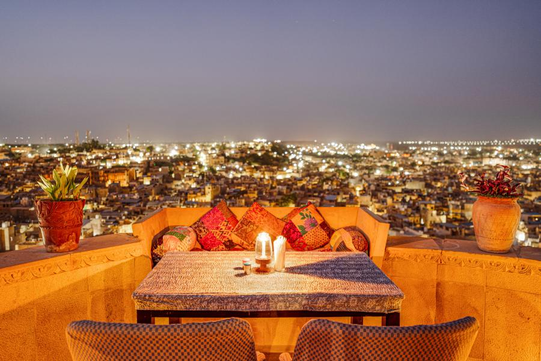

Rooftop restaurant
Take a break from the lanes of the fort and enjoy a meal with an open view over the city. Ask about the current menu and service hours before arriving.
See today’s options ↗
Garh Jaisal’s Kitchen
Garh Jaisal’s Kitchen sits inside Jaisalmer Fort. Check the current menu, service hours and table availability before setting out.
Garh Jaisal’s Kitchen
Plan a rooftop meal, ask for the current menu, or send a table enquiry. Current opening hours, menu, prices and availability must be confirmed by the restaurant.
Above the lanes
The rooftop is part of the setting: open sky, sandstone rooftops and the fort around you.
At Garh Jaisal’s Kitchen, ask about the current menu, service hours, dietary options and table availability before visiting. The source menu is still awaiting owner confirmation, so this website does not publish dishes or prices as current.
Ask about dining
Regular meal or special occasion
Ask what is available for your date, then confirm the menu, hours, price and any table setup before making plans.
Take a break from the lanes of the fort and enjoy a meal with an open view over the city. Ask about the current menu and service hours before arriving.
See today’s options ↗For anniversaries, proposals or a quiet evening together, enquire about a candlelit rooftop table. The photograph is a visual reference, not confirmation that a candlelit setup is available for your date; ask about the current arrangement, menu and price before making plans.
Plan a special evening ↗Before you enquire
Use the on-page WhatsApp enquiry link to ask about the current menu, prices, service hours and table availability for your preferred date and time. It opens a draft for you to review and send; the team must confirm the details.
A request, not a reservation
Share the date, party size and a preferred time if you have one. This prepares a WhatsApp draft for you to review; nothing is sent automatically.
Your table is not reserved until the restaurant replies and confirms it. Please confirm current hours and availability for your requested date.
Visit the rooftop kitchen
Rajasthani food on the rooftop.
Find the restaurant at Fort Kotari Para, inside Jaisalmer Fort, Jaisalmer, Rajasthan 345001. Ask directly for today's menu, current prices, opening hours, dietary options and table availability; no table request is confirmed by this page.
A small note before you visit
Please ask for the current menu, prices, service hours and table availability before visiting. For a candlelit dinner or a celebration, share your preferred date, time and any dietary requirements in advance. Current menu items and prices are not displayed because the source menu record is still marked as awaiting owner confirmation.
Garh Jaisal Haveli is inside the fort. Vehicles cannot reach our door, so allow time for the final walk through the historic lanes. For arrival questions, message or call the hotel using the contact links below to confirm the current approach; luggage assistance is not guaranteed.
Read how to get here →Before you visit
Menu items, prices, service hours and table availability are not live on this page. Confirm the current details for your date before travelling, and treat any special setup as a request until the team confirms it.

A view over the old city
This photograph shows the rooftops and sandstone setting around Jaisalmer Fort. It offers a sense of place, not a promise of the view from a particular table, current meal service or a special-event arrangement.
Share your preferred date and approximate time, party size, whether you are asking about a regular meal or a special occasion, and any dietary requirements you want the team to consider. Do not assume a request is a confirmed table reservation.
Ask whether a candlelit setup can be arranged for your date, what it includes, the current menu and price, and whether any advance coordination is needed. The page does not guarantee availability or a particular arrangement.
From Fort Parking, allow about 300 metres (around 5–6 minutes on foot); from the fort entrance, about 200 metres (around 3–4 minutes). Vehicles cannot reach the hotel door. Allow extra time for busy lanes and confirm your meeting point before visiting.
Read arrival guidance →See the locally hosted images and learn more about the haveli before you decide how to spend your time in Jaisalmer.
View the gallery → Our story →Inside Jaisalmer Fort
From Fort Parking, the walk is about 300 metres (around 5–6 minutes); from the fort entrance, about 200 metres (around 3–4 minutes). Vehicles cannot reach the hotel door. These estimates can vary with foot traffic, so confirm the current route and meeting point before visiting. Luggage help or transport is not guaranteed by this page.
Staying at the haveli too?
This separate enquiry is for room availability, desert experiences or arrival questions. It prepares a WhatsApp draft for you to review; it does not confirm a booking.